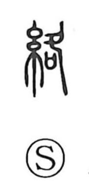

絡

Uncategorized
Kun: karamu, karamaru, karameru | On: raku
to entangle ・ to twine around ・ to coil around ・ to get caught ・ to connect
Explanation
絡 is a phono-semantic character: the silk-thread element evokes fiber, while 各 serves as the phonetic, giving the on reading raku, as seen also in 烙 and 珞. The Shuowen glosses it as old cotton or refuse hemp—hemp not yet soaked—materials that readily tangle and wind upon themselves. From this image, the character came to mean to get caught, to twine or coil around, and, by extension, to extend in connected sequence.